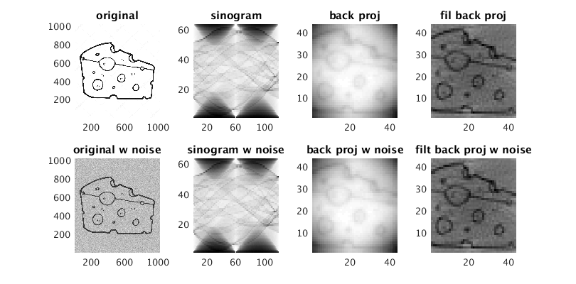

clear;
img = imread('cheese.jpg');
img = double(img(:,:,3));
img = flipud(img);
pcolor(img); shading flat;
r = 64;
a = 120;
R = [];
iaa = [];
for i = 1:a
ia = i*(180/a);
rim = imrotate(img,ia,'bilinear','crop');
Ri = sum(rim,2);
samp = floor(linspace(1,size(img,1),r));
R(:,i) = Ri(samp);
iaa = [iaa; ia];
end
[xg, yg] = meshgrid(1:r,1:a);
dr = iaa(2) - iaa(1);
Rb = zeros(a,r);
for i = 1:a
ia = iaa(i);
Rp = R(:,i);
ri = xg.*cosd(ia) + yg.*sind(ia);
ridx = round(ri./ (deg2rad(dr)+a))+2;
Rpp = zeros(size(ridx));
for j = 1:length(ridx(:))
Rpp(j) = Rp(ridx(j));
end
Rb = Rb + Rpp;
end
Rb = iradon(R, iaa, 'linear', 'none');
Rbf = iradon(R, iaa);
img2 = img+(randn(size(img)).*.1*max(max(img)));
Rn = [];
iaa = [];
for i = 1:a
ia = i*(180/a);
rim = imrotate(img2,ia,'bilinear','crop');
Ri = sum(rim,2);
samp = floor(linspace(1,size(img2,1),r));
Rn(:,i) = Ri(samp);
iaa = [iaa; ia];
end
Rbn = iradon(Rn, iaa, 'linear', 'none');
Rbfn = iradon(Rn, iaa);
close all;
figure; hold on;
set(gcf, 'Position', [100, 100, 800, 400])
subplot(2,4,1);
pcolor(img); shading flat; colormap gray;
title('original');
subplot(2,4,2);
pcolor(R); shading flat; colormap gray;
title('sinogram');
subplot(2,4,3);
pcolor(Rb'); shading flat; colormap gray;
title('back proj');
subplot(2,4,4);
pcolor(Rbf'); shading flat; colormap gray;
title('fil back proj');
subplot(2,4,5);
pcolor(img2); shading flat; colormap gray;
title('original w noise');
subplot(2,4,6);
pcolor(Rn); shading flat; colormap gray;
title('sinogram w noise');
subplot(2,4,7);
pcolor(Rbn'); shading flat; colormap gray;
title('back proj w noise');
subplot(2,4,8);
pcolor(Rbfn'); shading flat; colormap gray;
title('filt back proj w noise');
